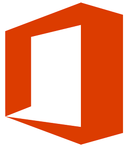

office مجموعه
بسته آفیس برای ویندوز از سال ۱۹۹۰ به طور رسمی آغاز شد که شامل سه برنامه Microsoft Word برای ویندوز ۱٫۱, Microsoft Excel برای ویندوز ۲٫۰ و Microsoft PowerPoint برای ویندوز ۲٫۰ بود. بسته آفیس برای ویندوز ۱٫۵ – این بسته با بروزرسانی Microsoft Excel 3.0 ارایه شد. بسته آفیس برای ویندوز ۱٫۶ – این بسته با اضافه شدن برنامه Microsoft Mail برای Microsoft Networks 2.1 به مجموعه ارایه شد. بسته آفیس برای ویندوز ۳٫۰ – این بسته با نام تجاری Microsoft Office 92 مشهور است که در سال ۱۹۹۲ به بازار ارایه شد. این اولین نسخه ای از آفیس بود که بر روی CD موجود بود. در سال ۱۹۹۳ The Microsoft Office Professional با اضافه شدن برنامه Access 1.1 ارایه شد. بسته آفیس ۴٫۰ – این بسته در حالی در سال ۱۹۹۳ ارایه شد که شامل برنامه های Word 6.0, Excel 4.0, PowerPoint 3.0 و Mail بود. در اینجا نسخه وورد از ۲٫۰ به ۶٫۰ پرش داشت تا در هر دو پلتفرم ورژن برابری داشته باشد. بسته آفیس ۴٫۲ برای ویندوز NT – این بسته در سال ۱۹۹۴ بروزرسانی شد و برنامه های Word 6.0 و Excel 5.0 نسخه های ۳۲ بیتی و PowerPoint 4.0 نسخه ۱۶ بیتی را شامل می شد. بسته آفیس ۴٫۳ – این بسته آخرین بسته ای بود که با فرمت ۱۶ بیت ارایه شد و شامل برنامه های Word 6.0, Excel 5.0 و PowerPoint 4.0 بود. بسته آفیس ۹۵ – در سال ۱۹۹۵ این بسته به طور کامل با ساختار ۳۲ بیتی طراحی شد تا با سیستم عامل ویندوز ۹۵ همخوانی داشته باشد. آفیس ۹۵ در دو نسخه Standard و Professional ارایه شد. نسخه استاندارد شامل Word 7.0, Excel 7.0, PowerPoint 7.0 و Schedule+ 7.0 بود. نسخه حرفه ای شامل کلیه برنامه های استاندارد به علاوه Access 7.0 بود. بسته آفیس ۹۷ – این نسخه به Office 8.0 مشهور است و یکی از نسخه های مهم به شمار می رود. آفیس ۸ با ابزارهای جدید فراوان و رفع مشکلات قدیمی ارایه شد. سیستم پردازش زبان و غلط گیر املایی اولین بار در این نسخه معرفی شدند. بسته آفیس ۲۰۰۰ – در آفیس جدید (آفیس ۹) منوهای جدیدی طراحی شدند تا کار با آن راحت تر شود. ابزارهای جدید سیستم محاظت و امضای دیجیتال برای کاهش تهدیدات پیاده سازی شد. آفیس ۹ آخرین بسته ای بود که از ویندوز ۹۵ پشتیبانی می کرد. بسته آفیس XP – آفیس XP, آفیس ۱۰ و آفیس ۲۰۰۲ نام های متفاوت این نسحه بودند که به همراه ویندوز XP ارایه شد. این بسته همچنان نسبت به بسته های قبلی از امکانات بسیاری برخوردار بود و پیشرفت های خوبی حاصل شده بود. قابلیت Safe Mode نیز معرفی شد که امکان بازگشایی برنامه را به هنگام بروز خطا امکان پذیر می ساخت. این نسخه به ابزارهایی مانند اجرا توسط فرامین صوتی, دیکته و شناسایی دست خط مجهز بود. این بسته برای اولین قابلیت Activation را در خود جای داده بود. بسته آفیس ۲۰۰۳ – یا آفیس ۱۱٫۰ در سال ۲۰۰۳ با لوگوی جدید خود منتشر شد. دو برنامه جدید با این بسته به نام های Microsoft InfoPath و Microsoft OneNote معرفی شد. این بسته آخرین نسخه ای بود که از ویندوز ۲۰۰۰ پشتیبانی می کرد. بسته آفیس ۲۰۰۷ – آفیس ۱۲ در سال ۲۰۰۷ ارایه شد. محیط دیداری کاملا گرافیکی جایگزین منوی های کلاسیک و قدیمی مجموعه (معروف به Ribbon) شد. فرمت آفیس به صورت XML تغییر یافت که با نام Office Open XML شناخته می شود. بسته آفیس ۲۰۱۰ – آفیس ۱۴ در سال ۲۰۱۰ میلادی رونمایی شد. قابلیت های اصلی این نسخه شامل منوی خصوصی, ابزارهای جدید همکاری, نوارهای قابل تغییر, نمایش محافظت شده و تابلوی مسیریابی می باشد. این اولین بسته ای است که به هر دو صورت ۳۲ و ۶۴ بیت فروخته می شود. این بسته لوگوی جدیدی داشت که با بسته ۲۰۰۷ فقط در رنگ و کمی در شکل اصلی تفاوت داشت. بسته آفیس ۲۰۱۳ – آفیس ۱۵ آخرین نسخه منتشر شده توسط ماکروسافت است که در سال ۲۰۱۲ رونمایی شد. جهش بسیار بزرگی در این بسته اتفاق افتاده است و رابط کاربری آن کاملا بر مبنای محیط جدید ویندوز, مترو, طراجی شده است. همچنین برنامه ها به طور خاص برای دستگاه های لمسی ساخته شده اند. PowerPoint شکل شمایل بهتری پیدا کرده است و از جلوه های بصری بیشتری برخوردار است. Excel قابلیت فیلترینگ خاص بر روی داده ها و فرمول نویسی قدرتمند را داراست. در Word قابلیت نمایش فیلم و صوت به صورت آنلاین فراهم شده است و اسناد را می توان به راحتی بر روی اینترنت منتشر کرد یا به اشتراک گذاشت.